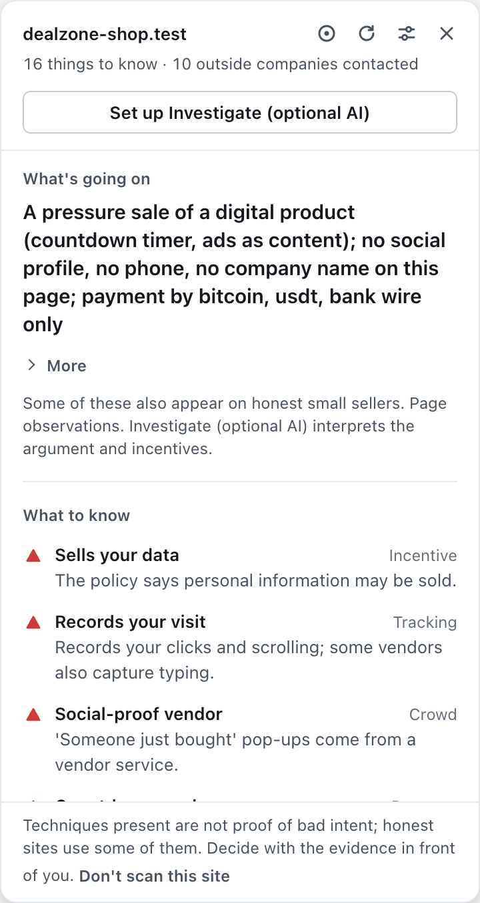
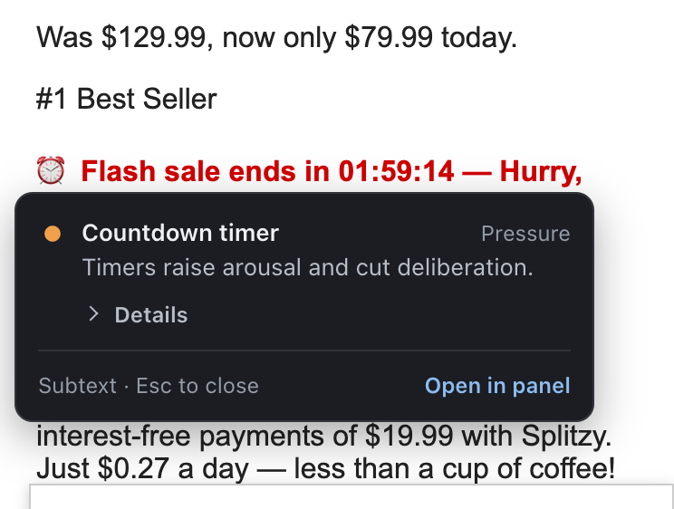
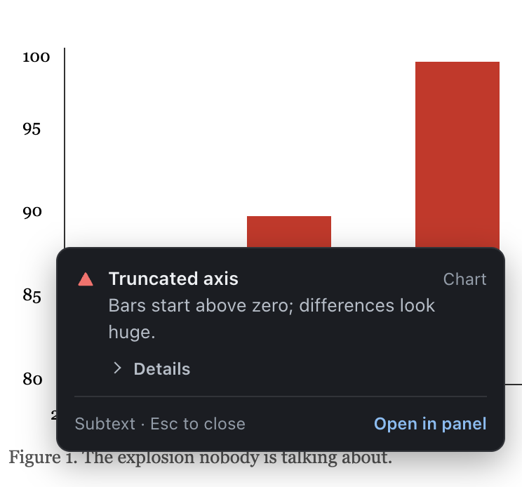
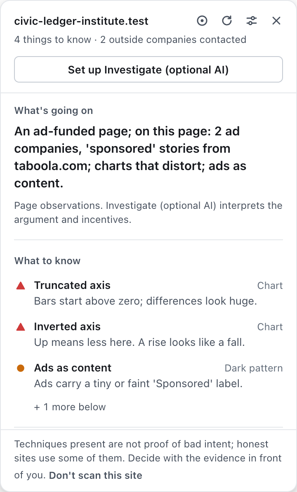
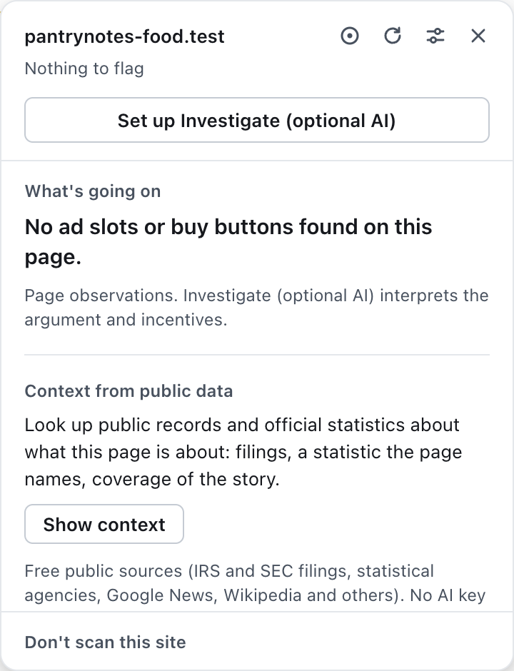

It is hard to know what to trust online. Subtext shows what a page is doing.
AI-made fakes, concentrated media ownership and misinformation make pages harder to judge. Subtext is a browser extension that shows who is behind a page, what they gain, and the dark patterns it uses.
Subtext is an early test version, v0.2. It is built and tested in Chromium, the base of Chrome 110 or newer, Edge, Brave and Arc.

Watch it work
This 73-second video has no sound. It shows two test pages.
- A test shop page opens. The Subtext pill appears in its corner.
- The pointer rests on the countdown timer. A tooltip reads "Countdown timer".
- A click on the pill opens the panel. A click on a label opens its explanation.
- On a test article, a tooltip on the chart reads "Truncated axis".
Try it yourself
Install Subtext, then open the two test pages.
Why this matters
A sale timer can restart each time you load the page. A chart can start its bars at 80, so a small rise looks large.
- In 2026, 37% of people across 48 markets said they trust the news, the lowest since 2015. So most readers already doubt the news they see. Source: Reuters Institute, Digital News Report 2026.
- In 2025, 53% of US adults were not confident they could tell AI-made content from human-made content. So a look at the page is often not enough. Source: Pew Research Center, 2025.
- A 2026 assessment of media in Europe rated the concentration of media markets as a very high risk. So it helps to know who owns an outlet. Source: Media Pluralism Monitor 2026.
Subtext does not decide what is true, and it does not detect AI-made content. It adds context and shows its evidence, so you can judge the page yourself.
Two examples: a shop page and a chart
Shop page: the tooltip on a countdown timer
Rest the mouse on the countdown timer, and a small box called a tooltip appears. It reads "Countdown timer", then "Timers raise arousal and cut deliberation."

Shop page: the panel
Click the pill, the small Subtext button in the corner of the page, to open the panel.

Click a label to read the explanation, what to do, and the evidence quoted from the page.


Chart: bars that start at 80, not at zero
On a test article, rest the mouse on the bar chart. The tooltip reads "Truncated axis", then "Bars start above zero; differences look huge."
Click Details in the tooltip to see the measurement: "The y-axis starts at 80 instead of 0."


Three questions Subtext asks about each page
These lists are examples, not every check.
Subtext also checks misleading charts, cookie banners, ads that look like content, and who runs a site that is not a news outlet. On a click, it can add context from public records and official statistics.
What the page is doing to you
- Countdown timers, including a timer that restarts between visits.
- Boxes ticked for you, and cookie banners with no reject button.
Who is behind it
- The owner and funding of 134 outlets, each with a link to a public source.
- For a site that is not on the outlet list: whether the page shows a company name or an address.
What they gain
- How the site earns money: ads, subscriptions, sales commissions or data collection.
- Which outside companies the page contacts.
- Clauses in the privacy policy and terms, such as one that lets the site sell your data.
What Subtext does not claim
- Subtext names a technique and shows evidence. It does not claim to know a site's motive.
- A technique on a page is not proof of bad intent. Many ordinary sites use time limits, customer counts and emotional words.
- Subtext gives no score or grade of its own. For some outlets it repeats how outside raters place them.
- Today 33 checks may show a label. Up to three more state plain facts about a shop page. Most checks that read a page's wording stay hidden until they pass tests on real pages.
- The checks are simple tests, and some labels are wrong. Each label from a check has a "Don't flag this again" control.
When no check finds anything
On an ordinary test page, the panel reads "Nothing to flag". That means the checks found nothing. It does not mean the page uses no techniques.

Privacy: what leaves your browser, and when
There is no Subtext server. Subtext sends nothing to the people who make it. The checks run inside your browser.
Some requests do leave your browser. Each site or service that receives a request can see your IP address.
On every page, unless you turn it off in Settings
- A public file on the site, named ads.txt, that lists who sells its ad space.
- The site's own privacy and terms pages, when the page links them.
- On a shop page that shows no company name, or no phone number: up to five of the site's contact and legal pages. Subtext may also read up to three public files that the site publishes for search engines.
These requests go to the site you are visiting or its main address, with no cookies and no referrer. A redirect can lead to another host.
Only when you click
- Compare: this button appears beside a link to a company filing, a study or a clinical trial. Subtext sends the document's public reference number to the SEC, Europe PMC or ClinicalTrials.gov.
- Show context: Subtext asks public sources such as Wikipedia and Google News about the page's subject. It sends the site address (such as example.com), a name, or up to 14 headline words. It never sends the full page address or the article text.
- Show context also sends the subject's name to Google Trends with your Google cookies. Google can link that name to your Google account. This lookup is on until you turn it off in Settings.
- Investigate: Subtext sends page excerpts to the AI company you chose, with your key. It can also read up to two public records or the site's own disclosure pages. It can send search words from the page to the SEC, Europe PMC or the AI company's search service.
Only if you turn it on
- Terms-of-service rating lookup (ToS;DR): Subtext sends the site address to tosdr.org.
- Domain registration lookup: Subtext sends the site address to the registry that holds it. Sometimes it also goes to the registrar or to rdap.org.
- Load context automatically: the Show context requests run on each page, without Google Trends.
This list is a summary. It leaves out other Show context sources and three optional AI features: chart pictures, a web check, and saved pages.
Why the extension asks to read every site
Subtext must read a page to label it. Subtext makes no scan and no requests on a site that you exclude in Settings.
Investigate: an optional AI answer that uses your own key
Investigate is off until you add an API key in Settings. An API key is an access code that you get from Anthropic (Claude) or OpenAI (ChatGPT). That company bills you for each use.
With the default Claude model, one use costs about 11 cents, measured on 43 real pages. With Claude, a web search can also run, and it adds about 5 cents.
The AI company receives the page title, headings, button text, link addresses and excerpts of the main text. It also receives excerpts of the sources Subtext read and the facts Subtext found. If the page shows personal information, such as your name, the excerpts can include it.
When the web search runs, the AI company also receives the page address, without anything after a question mark.
The result is an AI answer, not a verified fact.
Status: an early test version
What is not built or not tested
- Subtext is not built or tested for Safari or Firefox.
- Edge, Brave and Arc have no test run of their own.
- There is no browser store listing.
- Only AI models have reviewed the results on real pages. No person has reviewed them yet.
- The makers wrote the outlet list by hand. 25 of its 134 entries still need a second review.
- Some data files are held back for a licence review, so a few panel lines do not appear.
- To send a correction, open an issue on the repository's issues page. Subtext has no e-mail address.
- ChatGPT support is not tested.
Install Subtext from a zip file
- Download the zip file and unzip it. Developers can clone the code instead.
- Type
chrome://extensionsin the address bar. In Edge, typeedge://extensions, and in Brave, typebrave://extensions. - Turn on Developer mode. In Chrome the switch is at the top right.
- Click Load unpacked and choose the unzipped folder. In a clone, choose the folder named extension.
- Pin the Subtext icon and visit any page. Click the icon to open the panel.
Questions and answers
Does Subtext work without an AI key?
Yes. Only Investigate needs a key.
Is it politically one-sided?
The checks look for techniques, not political sides. We have not yet tested that left-leaning and right-leaning pages get labels at similar rates.
Open source: licences and method
Licences: AGPL-3.0-or-later for code, and CC BY-SA 4.0 for rules, documents and the outlet list.
Method and limits: docs/RELIABILITY.md, docs/CALIBRATION.md and docs/THREAT-MODEL.md. Checks and data: docs/TAXONOMY.md, extension/rules/text-rules.json and extension/data/outlets.json.